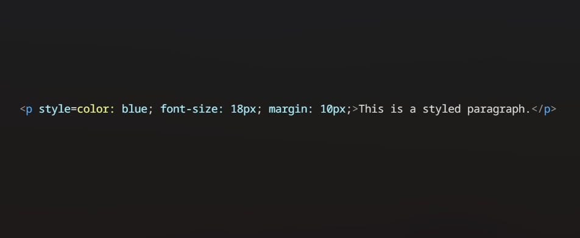
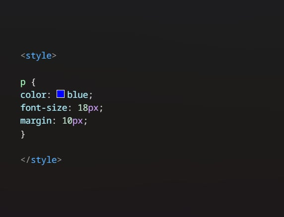
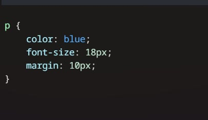
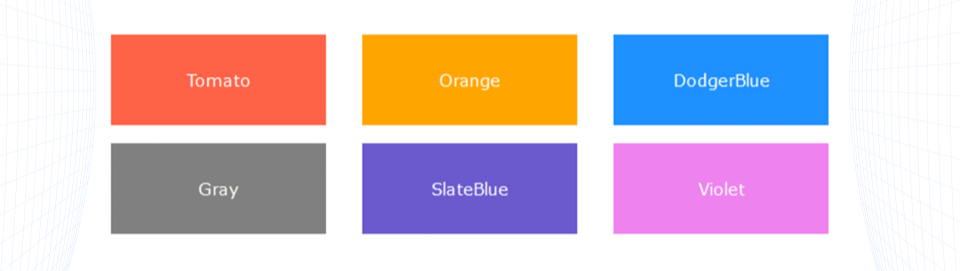
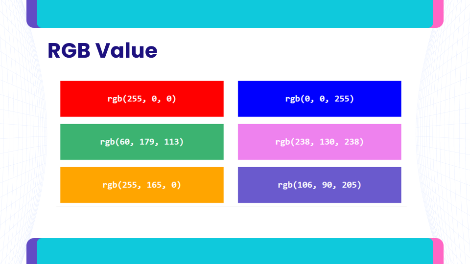
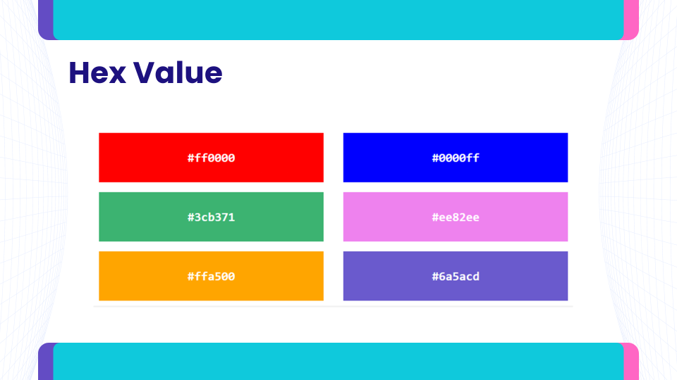
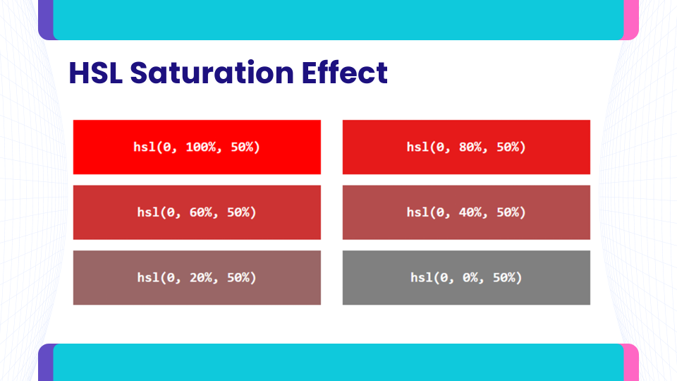
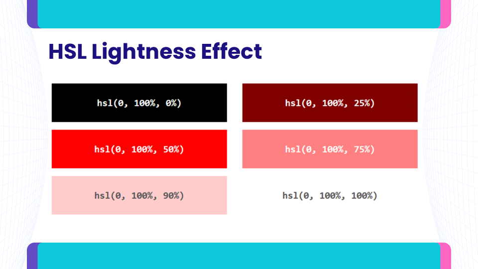

Cascading Style Sheets, or CSS, is a scripting language used to characterize the layout of an HTML document. CSS lets web developers determine how HTML components are to be viewed on various platforms and screen sizes.
Body {
Background-color: blue;
}
H1 {
Color: red;
Text-align: center;
}
The style attribute can be used to set the style of a specific HTML element.Least recommended styling method because of the difficulty it brings in managing larger websites. Useful for testing and previewing changes. The syntax should be like this: <tagname style=”property:value”> 
Internal CSS is a method of adding styling rules directly within an HTML document by using a <style> tag inside the <head> section. It allows you to apply styles to all elements on a single page without affecting other pages. This method is useful when you want to design a specific page differently or when the styles are small and do not need to be reused elsewhere. However, if the website has multiple pages with the same design, internal CSS can become inefficient compared to external CSS.
External CSS is a method where styling rules are written in a separate .css file and linked to the HTML using a <link> tag in the <head> section. It helps keep the HTML clean, makes the design consistent across multiple pages, and allows easy updates by editing just one file.
CSS frameworks are pre-prepared libraries of CSS code that make it faster and easier to design websites. They provide ready-made styles for layout, typography, buttons, forms, and other elements, helping developers create responsive and attractive designs quickly. Popular CSS frameworks include Bootstrap, Tailwind CSS, and Foundation. They save time, ensure consistency, and often come with built-in mobile-friendly features.
| Property | Description |
|---|---|
| background | Sets all the background properties in one declaration |
| background-color | Sets the background color of an element |
| background-image | Sets the background image for an element |
| background-repeat | Sets how a background image will be repeated |
| background-attachment | Sets whether a background image is fixed or scrolls with the rest of the page |
| background-position | Sets the starting position of a background image |
The background-color property defines the background color for an HTML element.
In HTML, a color can be defined by using color names or RGB, Hex and HSL values.
HTML supports 140 standard color names.
In HTML, a color can be specified as an RGB value using this formula: rgb(red, green, blue). Each parameter defines the intensity of the color between 0 and 255.
In HTML, a color can be specified using the hexadecimal value in the form: #rrggb.For example, #00ffff is displayed as cyan.
In HTML, a color can be specified using hue, saturation, and lightness (HSL).
A way of representing color.When you adjust the saturation in the HSL model, you're changing how intense or vivid the color appears.
The lightness parameter controls the lightness or darkness of a color. Adjusting the lightness affects how bright or dark the color appears.
The background-image property specifies an image to use as the background of an element. By default, the image is repeated so it covers the entire element.The background image for a page can be set like this:
<body style=”background-image: url(‘paper.gif’)”>
</body>
By default, the background-image property repeats an image both horizontally and vertically. If the image is repeated only horizontally (repeat-x), the background will look better:
<body style=”background-image: url(‘gradient.png’); background-repeat: repeat-x”>
</body>
The position of the image is specified by the background-position property:
<body style=”background-image: url(‘img_tree.png’); background-repeat: no-repeat; background-position: right top”>
</body>
The background-attachment property sets whether a background image is fixed or scrolls with the rest of the page.
| Value | Description |
|---|---|
| scroll | The background scrolls along with the element. This is default |
| fixed | The background is fixed with regard to the viewport |
The color property defines the text color for an HTML element. In HTML, you can change the text color using the CSS color property. You can specify the color using named colors (e.g., red, blue), hexadecimal values (e.g., #FF5733), or RGB values (e.g., rgb(255, 0, 0) for red). Additionally, the hsl format allows you to adjust the hue, saturation, and lightness for more control over the color. By applying the color property to HTML elements, you can easily customize the appearance of text on a webpage.
The font-family property defines the fonts to be used for an HTML element. There are many font-family you can use but here are some example:
body {
font-family: 'Arial', sans-serif;
}
h1 {
font-family: 'Georgia', serif;
}
The font-size property defines the text size for an HTML element. The font-size value can be an absolute (pixels) or relative (em) size.
p {
font-size: 25px;
}
The text-align property defines the horizontal text alignment for an HTML element. A text can be left or right aligned, centered or justified.
p {
text-align: justify;
}
The text-indent property is used to specify the indentation of the first line of text.
CSS margins are essential for defining the spacing around HTML elements outside their borders. The “auto” value allows the browser to automatically calculate the optimal margin, which is especially useful for centering elements. The “length” value enables you to set a fixed margin size using units such as pixels (px), points (pt), or centimeters (cm).
p {
margin: auto;
}
CSS padding is a fundamental aspect of web design that allows developers to create space around an element’s content, inside its borders.
p {
padding: 20px;
}
These properties specifically control the size of the space inside an element’s padding, border, and margin, allowing developers to dictate how much space the content occupies.
It allows us to control the layout of elements and their interaction with surrounding content. There are five primary values for the position property:
By default, all HTML elements have a position value of “static.” This means that the element is positioned according to the normal document flow and does not respond to the properties of top, bottom, left, or right.
div.static {
position: static;
border: 3px solid #73AD21;
}
When using position: fixed; the element is positioned relative to the viewport, which is the visible area of the web page. This means the element remains in a fixed location even when the page is scrolled.
div.fixed {
position: fixed;
bottom: 0;
right: 0;
width: 300px;
border: 3px solid #73AD21;
}
An element with the style position: absolute; is positioned relative to its closest ancestor that has a position other than ‘static’.
div.relative {
position: relative;
width: 400px;
height: 200px;
border: 3px solid #73AD21;
}
div.absolute {
position: absolute;
top: 80px;
right: 0;
width: 200px;
height: 100px;
border: 3px solid #73AD21;
}
The position: sticky; property is a hybrid positioning option that switches between relative and fixed positioning depending on the user’s scroll position.
div.sticky {
position: sticky;
top: 0;
background-color: green;
border: 2px solid #4CAF50;
}